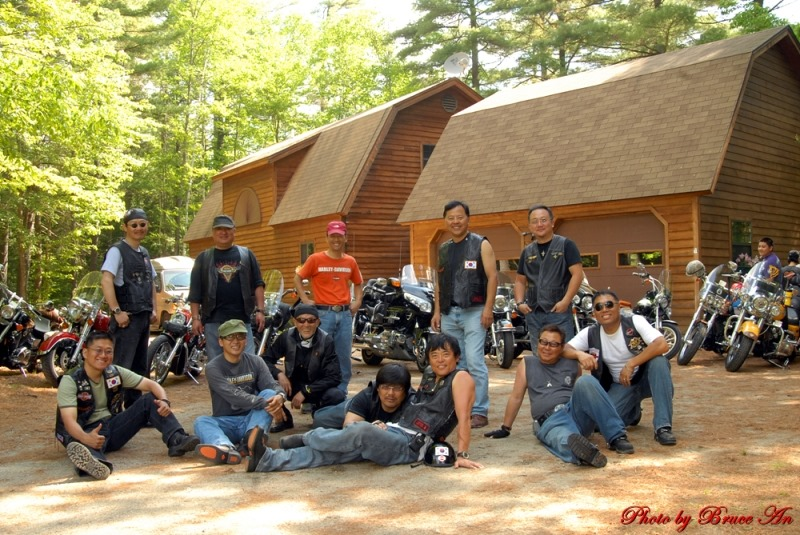
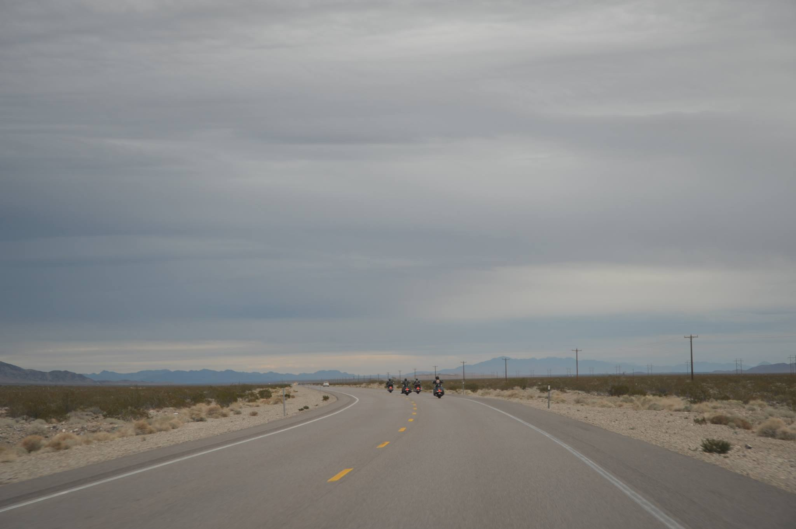
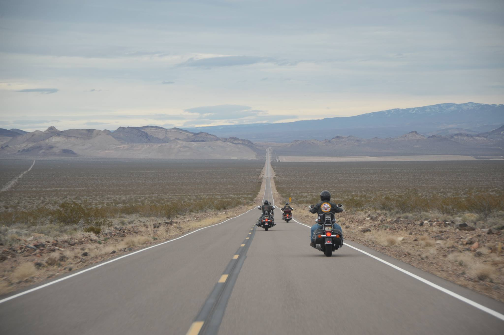
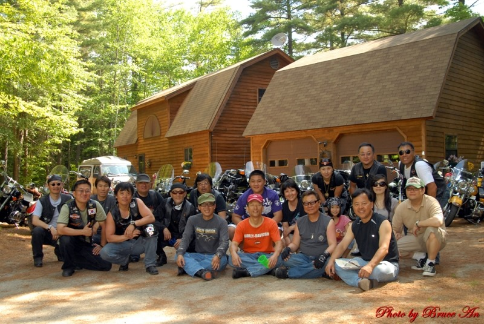

이 루트의 사진





CHICAGO → SANTA MONICA · 3,945km
1926년 완공된 미국 최초의 고속도로 — 시카고 Adams Street에서 산타모니카 Pier까지 3,945km.
라이더라면 평생 한 번은 달려봐야 할 Mother Road, 토마스가 옆에서 함께 달립니다.
Mother Road를 따라가는 6개 거점
Route 66 시작점. Adams Street의 "Begin Route 66" 표지판 앞에서 출발 의식.
미시시피 강을 건너는 게이트웨이 아치. 중부의 관문.
대평원의 중심. Route 66 박물관과 빈티지 다이너 코스.
뉴멕시코의 사막 풍경과 옛 푸에블로 마을. Route 66의 가장 정통적인 구간.
해발 2,100m, 사막에서 솟은 산악 도시. 그랜드캐니언 사우스 림까지 1시간 30분 라이딩 거리.
Santa Monica Pier의 "End of Route 66" 표지판. 태평양에 닿는 마무리.



출발 시기 · 일정 · 인원에 맞춰 토마스가 직접 답해 드립니다